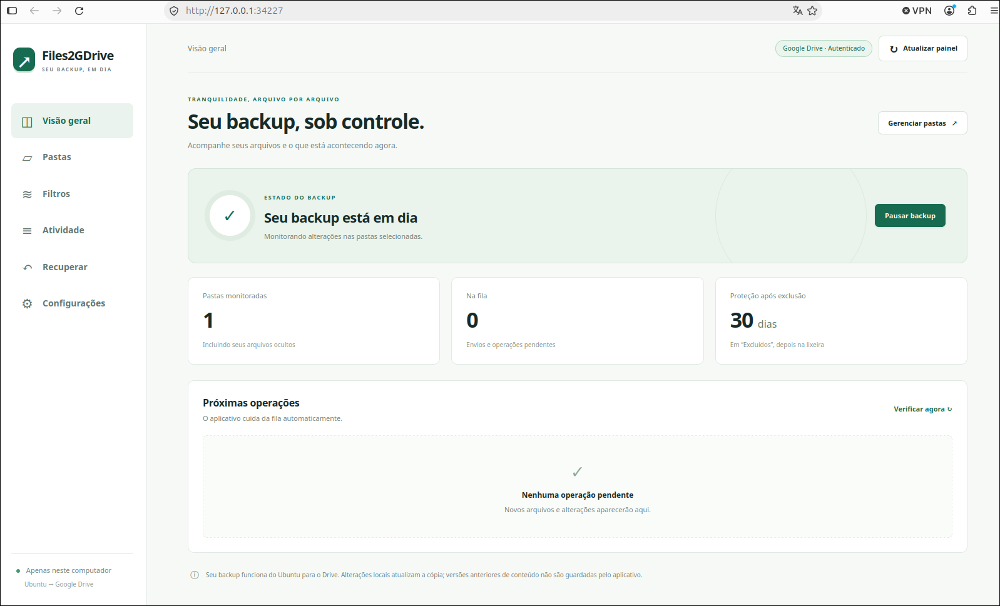

Seleção com exceções
Inclua uma pasta inteira e desmarque subpastas. Diretórios ocultos também podem entrar no backup.
SEU BACKUP, NO SEU CONTROLE
Escolha suas pastas e deixe o Files2GDrive acompanhar as alterações. Seus arquivos são enviados para a sua conta Google Drive, com configuração local e controles na bandeja do sistema.
Código aberto · Licença MIT · Release pública 0.1.0
Backup em uma direção
O login acontece no navegador, iniciado pelo aplicativo instalado. Este site não solicita acesso à sua conta.
SIMPLES DE ACOMPANHAR
Autenticação, fila e estado do backup em uma interface que abre no seu navegador local.

DO PRIMEIRO LOGIN AO BACKUP
Instale no Ubuntu e use sua própria conta Google. Não há cadastro adicional no Files2GDrive.
Abra o aplicativo e autorize sua conta Google pelo navegador. Os tokens ficam no cofre da sessão Linux.
Navegue pela sua pasta pessoal, mostre diretórios ocultos e marque o que deseja incluir. Revise antes de aplicar.
O aplicativo monitora as alterações e processa a fila. Pelo menu da bandeja, você pode configurar, pausar, retomar ou sair.
FEITO PARA A ROTINA DO LINUX
Do arquivo de trabalho à pasta de configuração, o backup segue as escolhas que você revisou.
Inclua uma pasta inteira e desmarque subpastas. Diretórios ocultos também podem entrar no backup.
Use extensões e padrões com * e ?, com regras globais ou por pasta.
Arquivos removidos localmente ficam em “Excluídos” por 30 dias. Depois, vão à lixeira do Drive.
Fila persistente, novas tentativas e até quatro envios simultâneos, com preparação de diretórios em lotes.
Consulte logs locais, acompanhe a autenticação e use as ferramentas de restauração e reconexão.
O aplicativo transfere seus arquivos para o Google Drive. Não usa um servidor do projeto para receber o conteúdo dos backups.
EXPERIMENTE NO SEU COMPUTADOR
Pacote .deb para Ubuntu 24.04 LTS, amd64. As dependências Python já estão incluídas; o APT instala as dependências nativas.
sudo apt install ./files2gdrive_0.1.0_amd64.debSe o aplicativo já estiver aberto, saia pelo menu da bandeja antes de atualizar.
Confira o funcionamento e a restauração no seu ambiente. Ubuntu 26.04 e outras arquiteturas ainda não têm suporte validado. Pastas vazias, links simbólicos e arquivos especiais não são enviados.
Uma direção: Ubuntu → Drive. Alterações locais atualizam a cópia. Mudanças feitas no Drive não são sincronizadas de volta ao computador. O app não mantém histórico próprio de versões do conteúdo.
Autorização da sua conta. O aplicativo usa a permissão drive.file. O projeto OAuth oficial está em produção, sem cadastro individual de testadores. Contas Workspace continuam sujeitas às políticas da organização; projetos próprios em Testing mantêm suas restrições.
Saiba como os dados são tratados na Política de Privacidade e consulte os Termos de Uso.